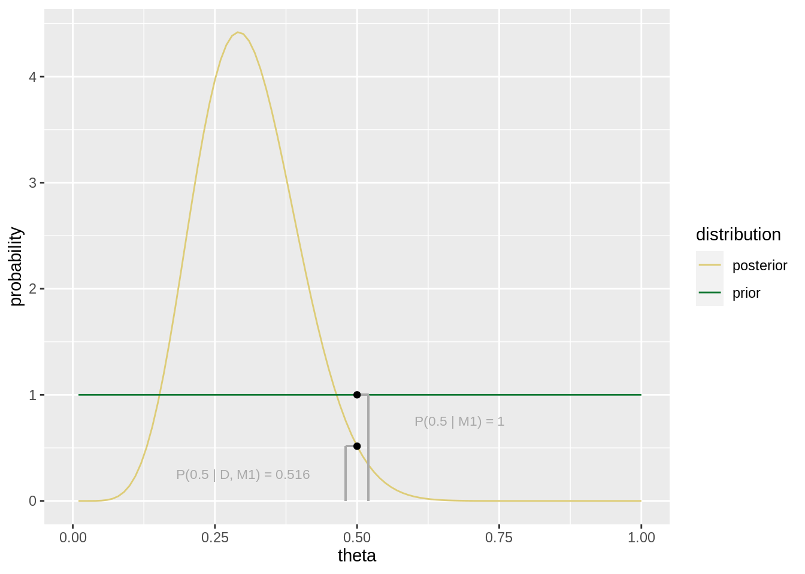
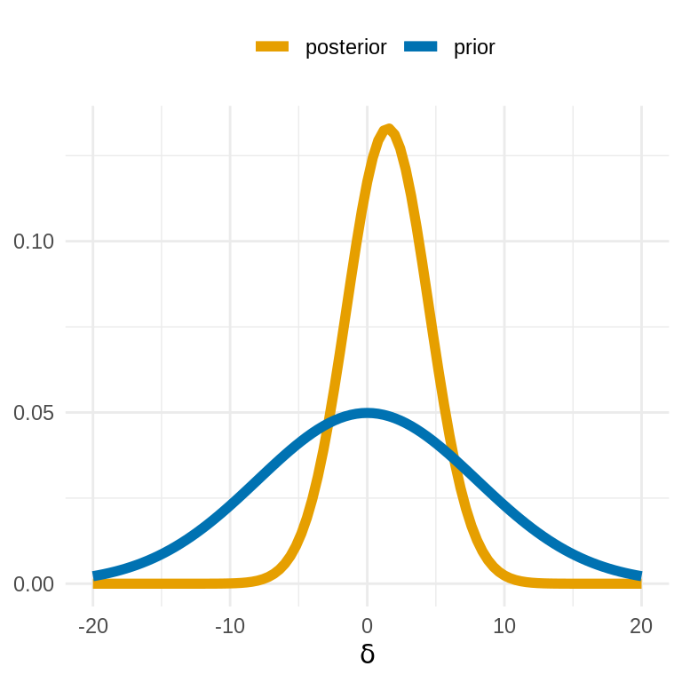
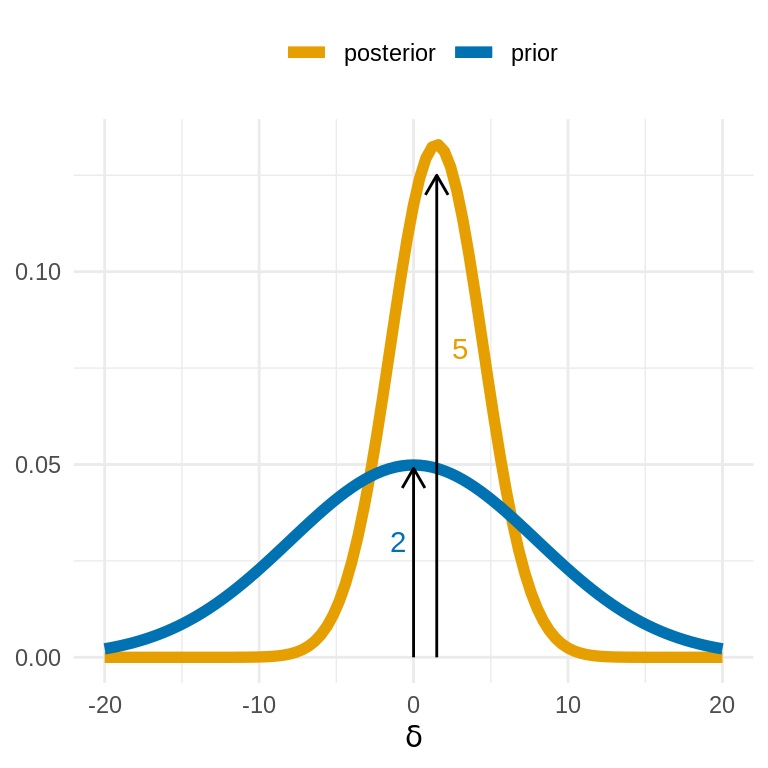
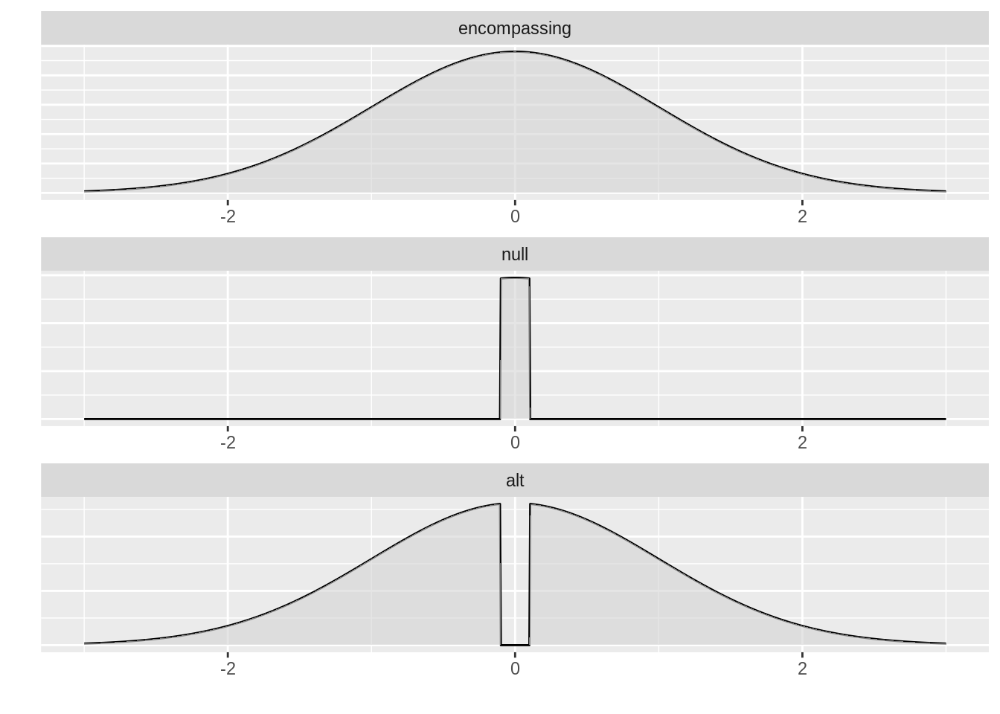

Testing hypotheses based on parameter estimation, and in particular the categorical decision rules for accepting or rejecting hypotheses outlined in the previous section, only give a very coarse-grained picture.
Bayesian analysis is about providing quantitative information about uncertainty and evidence, which are intuitive and easily interpretable.
So, we would also like to have a quantitative assessment of the evidence for or against a hypothesis provided by some data against the background of a given model.
This is what the comparison-based approaches to Bayesian hypothesis testing give us.
Here is some further motivation why model comparison might be a good replacement for “testing via estimation”.
A statistical hypothesis \(H\) is basically an event: a subset of parameter values are picked out of the whole parameter space.
After observing data \(D_\text{obs}\) and based on model \(M\), the ideal measure to have is \(P_M(H \mid D_\text{obs})\): given data and model, how likely is the hypothesis in question?
The problem with this posterior formulation \(P_M(H \mid D_\text{obs})\) is that, for it to be meaningful, it must quantify over the set of all alternative hypotheses.
If \(H\) is a point-valued hypothesis over a single parameter, the set of all alternative hypotheses could comprise all other logically possible point-valued hypotheses for the same parameter.
But then, if that parameter is a continuous parameter, the posterior density at \(P_M(H \mid D_\text{obs})\) is not meaningfully interpretable as a probability (mass).
If \(H\) is an interval-based hypothesis, the posterior \(P_M(H \mid D_\text{obs})\) would be meaningfully interpretable as a probability (mass), but still the question of what exactly the space of alternatives is is left implicit.
Moreover, the posterior \(P_M(H \mid D_\text{obs})\) is influenced by the model’s prior over \(H\).
So, a nominally high value of \(P_M(H \mid D_\text{obs})\) is as such uninteresting because we would need to take the prior \(P_M(H)\) into account as well.
This is why a comparison-based approach to Bayesian hypothesis testing explicitly compares two models:
The null model\(M_0\) is the model that incorporates the assumption of the hypothesis \(H\) to be tested. For example, the null model would put prior probability zero on those parameter values which are ruled out by \(H\).
The alternative model\(M_1\) is an explicitly formulated model which incorporates some contextually or technically useful alternative to \(M_0\).
The comparison-based approach to hypothesis testing then quantifies, using Bayes factors, the evidence that \(D_\text{obs}\) provides for or against \(M_0\) (the model representing the “null hypothesis”) over the alternative model \(M_1\) (the model representing the alternative hypothesis).
In this way, by looking at the ratio:
this approach is independent of the prior probability assigned to models \(P(M_0)\) and \(P(M_1)\).
Notice, however, that it is not independent of the priors over \(\theta\) used in \(M_1\)!
When the null hypothesis is point-valued, the alternative model is not based on the complement \(\theta \neq \theta^*\), but on the technically much more practical and also conceptually more plausible alternative model that assumes that \(\theta\) is free to range over a larger interval including, but not limited to \(\theta^*\). We can then use the so-called Savage-Dickey method, described in Section 11.4.1, to compare the null and the alternative models as so-called nested models.
When the null hypothesis is interval-valued, the alternative model can be conceived as based on the complement of the null hypothesis. We can then use an extension of the Savage-Dickey method based on a so-called encompassing model, described in Section 11.4.2, where we construe both the null model and the alternative model as nested under a third, well, encompassing model.
This chapter shows how Bayes factors can be approximated based on samples from the posterior following both of these approaches.
11.4.1 The Savage-Dickey method
The Savage-Dickey method is a very convenient way of computing Bayes factors for nested models, especially when models only differ with respect to one parameter.
Suppose that there are \(n\) continuous parameters of interest \(\theta = \langle \theta_1, \dots, \theta_n \rangle\). \(M_1\) is a (Bayesian) model defined by \(P(\theta \mid M_1)\) and \(P(D \mid \theta, M_1)\). \(M_0\) is properly nested under \(M_1\) if:
Intuitively put, \(M_0\) is properly nested under \(M_1\), if \(M_0\) is a special case of \(M_1\) which fixes certain parameters to specific point-values.
Notice that the last condition is satisfied in particular when \(M_1\)’s prior over \(\theta_1, \dots, \theta_{i-1}\) is independent of the values for the remaining parameters.
We can express a point-valued hypothesis in terms of a model \(M_0\) which is nested under the alternative model \(M_1\), the latter of which assumes that the parameters in question can take more than one value.
For such properly nested models, we can compute a Bayes factor efficiently using the following result.
Theorem 11.1 (Savage-Dickey Bayes factors for nested models) Let \(M_0\) be properly nested under \(M_1\) s.t. \(M_0\) fixes \(\theta_i = x_i, \dots, \theta_n = x_n\). The Bayes factor \(\text{BF}_{01}\) in favor of \(M_0\) over \(M_1\) is then given by the ratio of posterior probability to prior probability of the parameters \(\theta_i = x_i, \dots, \theta_n = x_n\) from the point of view of the nesting model \(M_1\):
Proof. Let’s assume that \(M_0\) has parameters \(\theta = \langle\phi, \psi\rangle\) with \(\phi = \phi_0\), and that \(M_1\) has parameters \(\theta = \langle\phi, \psi \rangle\) with \(\phi\) free to vary. If \(M_0\) is properly nested under \(M_1\), we know that \(\lim_{\phi \rightarrow \phi_0} P(\psi \mid \phi, M_1) = P(\psi \mid M_0)\). We can then rewrite the marginal likelihood under \(M_0\) as follows:
The result follows if we divide by \(P(D \mid M_1)\) on both sides of the equation.
11.4.1.1 Example: 24/7
Here is an example based on the 24/7 data. For a nesting model with a flat prior (\(\theta \sim^{M_1} \text{Beta}(1,1)\)), and a point hypothesis \(\theta_c = 0.5\), we just have to calculate the prior and posterior probability of the critical value \(\theta_c = 0.5\):
# point-value of interesttheta_star <-0.5# posterior probability in nesting modelposterior_theta_star <-dbeta(theta_star, 8, 18)# prior probability in nesting modelprior_theta_star <-dbeta(theta_star, 1, 1)# Bayes factor (using Savage-Dickey)BF_01 <-posterior_theta_star /prior_theta_starBF_01
## [1] 0.5157351
This is very minor evidence in favor of the alternative model (Bayes factor \(\text{BF}_{10} \approx 1.94\)). We would not like to draw any (strong) categorical conclusions from this result regarding the question of whether the coin might be fair. Figure 11.6 also shows the relation between prior and posterior at the point-value of interest.

Figure 11.6: Illustration of the Savage-Dickey method of Bayes factor computation for the 24/7 case.
11.4.1.2 Example: Simon task
In the previous 24/7 example, using the Savage-Dickey method was particularly easy because we know a closed-form solution of the precise posterior, so that we could easily calculate the posterior for the critical value without further ado.
When this is not the case, like in the application to the Simon task data, we have to obtain an estimate for the posterior density at the critical value, here: \(\delta = 0\), from the posterior samples which we obtain from sampling, as we did earlier in this chapter (using Stan).
An approximate method for obtaining this value is implemented in the polspline package (using polynomial splines to approximate the posterior curve).
# extract the samples for the delta parameter# from the earlier Stan fitdelta_samples <-tidy_draws_tt2 %>%filter(Parameter == "delta") %>%pull(value)# estimating the posterior density at delta = 0 with polynomial splinesfit.posterior <-polspline::logspline(delta_samples)posterior_delta_null <-polspline::dlogspline(0, fit.posterior)# computing the prior density of the point-value of interest# [NB: the prior on delta was a standard normal]prior_delta_null <-dnorm(0, 0, 1) # compute BF via Savage-DickeyBF_delta_null =posterior_delta_null /prior_delta_nullBF_delta_null
## [1] 9.901836e-16
We conclude from this result that the data provide extremely strong evidence against the null model, which assumes that \(\delta = 0\), when compared to an alternative model \(M_1\), which assumes that \(\delta \sim \mathcal{N}(0,1)\) in the prior.
Exercise 11.3: Bayes factors with the Savage-Dickey method
Look at the plot below. You see the prior distribution and the posterior distribution over the \(\delta\) parameter in a Bayesian \(t\)-test model. We are going to use this plot to determine (roughly) the Bayes factor of two models: the full Bayesian \(t\)-test model, and a model nested under this full model which assumes that \(\delta = 0\).

Describe in intuitive terms what it means for a Bayesian model to be nested under another model. It is sufficient to neglect the conditions on the priors.
A model nested under another model fixes certain parameters to specific values which may take on more than one value in the nesting model.
Write down the formula for the Bayes factor in favor of the null model (where \(\delta = 0\)) over the full model using the Savage-Dickey theorem.
Give a natural language paraphrase of the formula you wrote down above.
The Bayes factor in favor of the embedded null model over the embedding model is given by the posterior density at \(\delta = 0\) under the nesting model divided by the prior in the nesting model at \(\delta = 0\).
Now look at the plot above. Give your approximate guess of the Bayes factor in favor of the null model in terms of a fraction of whole integers (something like: \(\frac{4}{3}\) or \(\frac{27}{120}\), …).

\(BF_{01} \approx \frac{5}{2}\) (see plot above).
Formulate a conclusion to be drawn from this numerical result about the research hypothesis that the mean of the two groups compared here is identical. Write one concise sentence like you would in a research paper.
A BF of \(\frac{5}{2}\) is mild evidence in favor of the null model, but conventionally not considered strong enough to be particularly noteworthy.
11.4.1.3 [Excursion:] Calculating the Bayes factor precisely
under construction
11.4.2 Encompassing models
The Savage-Dickey method can be generalized to also cover interval-valued hypotheses.
The previous literature has focused on inequality-based intervals/hypotheses (like \(\theta \ge 0.5\)) (Klugkist, Kato, and Hoijtink 2005; Wetzels, Grasman, and Wagenmakers 2010; Oh 2014), but the method also applies to ROPE-d hypotheses.
The advantage of this method is that we can use samples from the posterior distribution to approximate integrals, which is more robust than having to estimate point-values of posterior density.
Following previous work (Klugkist, Kato, and Hoijtink 2005; Wetzels, Grasman, and Wagenmakers 2010; Oh 2014), the main idea is to use so-called encompassing priors. Let \(\theta\) be a single parameter of interest (for simplicity), which can in principle take on any real value. We are interested in the interval-based hypotheses:
\(H_0 \colon \theta \in I_0\), and
\(H_a \colon \theta \not \in I_{0}\)
where \(I_{0}\) is some possibly half-open interval.
An encompassing model\(M_e\) has a suitable likelihood function \(P_{M_e}(D \mid \theta, \omega)\) (where \(\omega\) is a vector of other parameters besides the parameter \(\theta\) of interest). It also defines a prior \(P_{M_e}(\theta, \omega)\), which does not already rule out \(H_{0}\) or \(H_{a}\).
Generalizing over the Savage-Dickey approach, we construct two models, one for each hypothesis, both of which are nested under the encompassing model:
Both \(M_0\) and \(M_a\) have the same likelihood function as \(M_e\), which is why we drop the model index for better readability in the following.
Figure 11.7 shows an example of the priors of an encompassing model for two nested models based on a ROPE-d hypothesis testing approach.

Figure 11.7: Example of the prior of an encompassing model and the priors of two models nested under it.
Theorem 11.2 Fix a Bayesian model \(M\) (the encompassing model) with prior \(P_M(\theta, \omega)\) and likelihood function \(P_M(D \mid \theta, \omega)\), where \(\theta\) is the parameter of interest and \(\omega\) is a vector of other (nuisance) parameters. Assume that the priors over \(\theta\) are independent of the nuisance parameters \(\omega\). For an interval-valued hypothesis \(H_0 \colon \theta \in I_0\), the Bayes factor in favor of this hypothesis over its negation \(H_a \colon \theta \not \in I_0\) can be expressed as:
The Bayes factor using the ROPE-d method to compute the interval-valued hypothesis \(\theta = 0.5 \pm \epsilon\) is:
# set the scenetheta_null <-0.5epsilon <-0.01# epsilon margin for ROPEupper <-theta_null +epsilon # upper bound of ROPElower <-theta_null -epsilon # lower bound of ROPE# calculate prior odds of the ROPE-d hypothesisprior_of_hypothesis <-pbeta(upper, 1, 1) -pbeta(lower, 1, 1)prior_odds <-prior_of_hypothesis /(1-prior_of_hypothesis)# calculate posterior odds of the ROPE-d hypothesisposterior_of_hypothesis <-pbeta(upper, 8, 18) -pbeta(lower, 8, 18)posterior_odds <-posterior_of_hypothesis /(1-posterior_of_hypothesis)# calculate Bayes factorbf_ROPEd_hypothesis <-posterior_odds /prior_oddsbf_ROPEd_hypothesis
## [1] 0.5133012
This is unnoteworthy evidence in favor of the alternative hypothesis (Bayes factor \(\text{BF}_{10} \approx 1.95\)).
Notice that the reason why the alternative hypothesis does not fare better in this analysis is because it also includes a lot of parameter values (\(\theta > 0.5\)) which explain the observed data even more poorly than the values included in the null hypothesis.
We can also use this approach to test the directional hypothesis that \(\theta < 0.5\).
# calculate prior odds of the ROPE-d hypothesis# [trivial in the case at hand, but just to be explicit]prior_of_hypothesis <-pbeta(0.5, 1, 1) prior_odds <-prior_of_hypothesis /(1-prior_of_hypothesis)# calculate posterior odds of the ROPE-d hypothesisposterior_of_hypothesis <-pbeta(0.5, 8, 18)posterior_odds <-posterior_of_hypothesis /(1-posterior_of_hypothesis)# calculate Bayes factorbf_directional_hypothesis <-posterior_odds /prior_oddsbf_directional_hypothesis
## [1] 45.20512
Here we should conclude that the data provide substantial evidence in favor of the assumption that the coin is biased towards tails, when compared against the alternative assumption that it is biased towards heads.
If the dichotomy is “heads bias vs tails bias” the data clearly tilts our beliefs towards the “tails bias” possibility.
11.4.2.2 Example: Simon task
Using posterior samples, we can also do similar calculations for the Simon task.
Let’s first approximate the Bayes factor in favor of the ROPE-d hypothesis \(\delta = 0 \pm 0.1\) when compared against the alternative hypothesis \(\delta \not \in 0 \pm 0.1\).
# estimating the BF for ROPE-d hypothesis with encompassing priorsdelta_null <-0epsilon <-0.1# epsilon margin for ROPEupper <-delta_null +epsilon # upper bound of ROPElower <-delta_null -epsilon # lower bound of ROPE# calculate prior odds of the ROPE-d hypothesisprior_of_hypothesis <-pnorm(upper, 0, 1) -pnorm(lower, 0, 1)prior_odds <-prior_of_hypothesis /(1-prior_of_hypothesis)# calculate posterior odds of the ROPE-d hypothesisposterior_of_hypothesis <-mean( lower <=delta_samples &delta_samples <=upper )posterior_odds <-posterior_of_hypothesis /(1-posterior_of_hypothesis)# calculate Bayes factorbf_ROPEd_hypothesis <-posterior_odds /prior_oddsbf_ROPEd_hypothesis
## [1] 0
This is overwhelming evidence against the ROPE-d hypothesis that \(\delta = 0 \pm 0.1\).
We can also use this approach to test the directional hypothesis that \(\delta > 0.5\).
# calculate prior odds of the ROPE-d hypothesis# [trivial in the case at hand, but just to be explicit]prior_of_hypothesis <-1-pnorm(0, 0, 1)prior_odds <-prior_of_hypothesis /(1-prior_of_hypothesis)# calculate posterior odds of the ROPE-d hypothesisposterior_of_hypothesis <-mean( delta_samples >=0.5 )posterior_odds <-posterior_of_hypothesis /(1-posterior_of_hypothesis)# calculate Bayes factorbf_directional_hypothesis <-posterior_odds /prior_oddsbf_directional_hypothesis
## [1] Inf
Modulo imprecision induced by sampling, we see that the evidence in favor of the directional hypothesis \(\delta > 0.5\) is immense.
Exercise 11.4: True or False?
Decide for the following statements whether they are true or false.
An encompassing model for addressing ROPE-d hypotheses needs two competing models nested under it.
A Bayes factor of \(BF_{01} = 20\) constitutes strong evidence in favor of the alternative hypothesis.
A Bayes factor of \(BF_{10} = 20\) constitutes minor evidence in favor of the alternative hypothesis.
We can compute the BF in favor of the alternative hypothesis with \(BF_{10} = \frac{1}{BF_{01}}\).
Statements a. and d. are correct.
Anscombe, F. J. 1973. “Graphs in Statistical Analysis.” The American Statistician 27 (1): 17–21. https://doi.org/10.2307/2682899.
Box, George E. P. 1979. “Robustness in the Strategy of Scientific Model Building.” In Robustness in Statistics, edited by R. L. Launer and G. N. Wilkinson, 201–36. Cambridge, MA: Academic Press.
Burkner, Paul-Christian. 2017. “brms: An R Package for Bayesian Multilevel Models Using Stan.” Journal of Statistical Software 80 (1): 1–28. https://doi.org/10.18637/jss.v080.i01.
Burnham, Kenneth P., and David R. Anderson. 2002. Model Selection and Multimodel Inference: A Practical Information-Theoretic Approach. Berlin: Springer.
Carpenter, Bob, Andrew Gelman, Matthew D. Hoffman, Daniel Lee, Ben Goodrich, Michael Betancourt, Marcus Brubaker, Jiqiang Guo, Peter Li, and Allen Riddell. 2017. “Stan: A Probabilistic Programming Language.” Journal of Statistical Software 76 (1). https://doi.org/10.18637/jss.v076.i01.
Goodman, Noah D, and Andreas Stuhlmüller. 2014. “The Design and Implementation of Probabilistic Programming Languages.” http://dippl.org.
Gronau, Quentin F., Alexander Ly, and Eric-Jan Wagenmakers. 2019. “Informed Bayesian T-Tests.” The American Statistician.
Gronau, Quentin F., Alexandra Sarafoglou, Dora Matzke, Alexander Ly, Udo Boehm, Maarten Marsman, David S. Leslie, Jonathan J. Forster, Eric-Jan Wagenmakers, and Helen Steingroever. 2017. “A Tutorial on Bridge Sampling.” Journal of Mathematical Psychology 81: 80–97.
Halpern, Joseph Y. 2003. Reasoning about Uncertainty. MIT Press.
Klugkist, Irene, Bernet Kato, and Herbert Hoijtink. 2005. “Bayesian Model Selection Using Encompassing Priors.” Statistica Neelandica 59 (1): 57–69.
Kruschke, John. 2015. Doing Bayesian data analysis: A tutorial with R, JAGS, and Stan. Academic Press.
Lee, Michael D., and Eric-Jan Wagenmakers. 2014. Bayesian cognitive modeling: A practical course. Cambridge university press.
Mithat Gonen, Yonggang Lu & Peter H. Westfall, Wesley O. Johnson. 2005. “The Bayesian Two-Sample T-Test.” The American Statistician 59 (3): 252–57. https://doi.org/10.1198/000313005X55233.
Myung, In Jae. 2003. “Tutorial on Maximum Likelihood Estimation.” Journal of Mathematical Psychology 47: 90–100.
Oh, Man-Suk. 2014. “Bayesian Comparison of Models with Inequality and Equality Constraints.” Statistics and Probability Letters 84: 176–82.
R Core Team. 2018. R: A Language and Environment for Statistical Computing. Vienna, Austria: R Foundation for Statistical Computing. https://www.R-project.org/.
Rouder, Jeffrey N., and Richard D. Morey. 2012. “Default Bayes Factors for Model Selection in Regression.” Multivariate Behavioral Research 47 (6): 877–903.
Rouder, Jeffrey N., Paul l. Speckman, Dongchu Sun, Richard D. Morey, and Geoffrey Iverson. 2009. “Bayesian T Tests for Accepting and Rejecting the Null Hypothesis.” Psychonomic Bulletin & Review 16 (2): 225–37.
Tufte, Edward. 1983. The Visual Display of Quantitative Information. Graphics Press.
Wagenmakers, Eric-Jan, and Simon Farrell. 2004. “AIC Model Selection Using Akaike Weights.” Psychonomic Bulletin & Review 11 (1): 192–96.
Wetzels, Ruud, Raoul P. P. P. Grasman, and Eric-Jan Wagenmakers. 2010. “An Encompassing Prior Generalization of the Savage–Dickey Density Ratio.” Computational Statistics and Data Analysis 54: 2094–2102.
Wickham, Hadley. 2010. “A Layered Grammar of Graphics.” Journal of Computational and Graphical Statistics 19 (1): 3–28.
———. 2014. “Tidy Data.” Journal of Statistical Software 59 (10).
Wickham, Hadley, and Garrett Grolemund. 2016. R for Data Science: Import, Tidy, Transform, Visualize, and Model Data. O’Reilly Media, Inc.
References
Klugkist, Irene, Bernet Kato, and Herbert Hoijtink. 2005. “Bayesian Model Selection Using Encompassing Priors.” Statistica Neelandica 59 (1): 57–69.
Oh, Man-Suk. 2014. “Bayesian Comparison of Models with Inequality and Equality Constraints.” Statistics and Probability Letters 84: 176–82.
Wetzels, Ruud, Raoul P. P. P. Grasman, and Eric-Jan Wagenmakers. 2010. “An Encompassing Prior Generalization of the Savage–Dickey Density Ratio.” Computational Statistics and Data Analysis 54: 2094–2102.